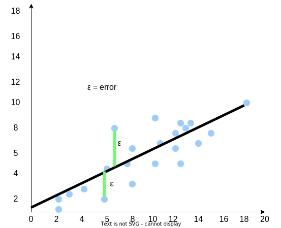

단순 선형 회귀
단순 선형 회귀란?
단순 선형 회귀(Simple Linear Regression)는 두 변수 간의 상관관계를 찾아내고, 이 관계를 설명하는 수학적 공식을 만드는 방법입니다. 일반적으로 단순 선형 회귀에서는 다음과 같은 결론에 도달하는 것을 목적으로 합니다:
-
우리가 가진 변수들 간에 관계가 있는가?
여러분은 소득과 소비, 경력과 급여, 또는 습도와 온도 사이의 관계를 파악할 수 있습니다. 반면, 학생의 키와 시험 점수 사이에는 아무런 관계가 없습니다.
-
값을 예측하거나 예견할 수 있는가?
회귀 분석(Regression)을 통해 모델을 학습시키고, 값을 확실하게 예측할 수 있는지 알아낼 수 있습니다. 우리가 관계에 대해 알고 있는 정보를 사용해서 새로운 값을 예측할 수 있을까요?
예시:
- 내일 온도는 몇 도가 될까?
- 올해 우리 빵집은 작년과 비교해서 얼마나 매출을 올릴까?
- 내가 경력이 5년이라면 급여는 얼마가 될까?
변수의 역할
단순 선형 회귀에서 변수는 두 가지 역할 중 하나를 맡습니다:
-
종속 변수(Dependent Variable):
예측하거나 알아내고 싶은 값입니다. 종속 변수는 다른 변수에 따라 값이 결정되므로, “종속적"이라고 부릅니다. 이를 y라고 합니다.
-
독립 변수(Independent Variable):
종속 변수에 영향을 미치는 변수입니다. 우리가 조정하거나 변경할 수 있는 변수입니다. 이를 x라고 합니다.
예시:
만약 사과 한 개의 가격이 $1.00이고, 사과를 10개 산다면 총 비용은 $10.00이 됩니다.- 이 경우, 종속 변수(y)는 총 비용입니다.
- 독립 변수(x)는 사과의 개수입니다.
단순 선형 방정식의 수학적 모델
우리가 단순 선형 회귀를 사용할 때 이를 “선형(linear)“이라고 부르는 이유는, 수학적 모델이 2차원 평면에서 직선을 나타내기 때문입니다. 잠시 생각해 봅시다.
직선의 수학적 방정식은 무엇일까요?
실제 세계에서의 예시
실제로는 데이터가 항상 선형적이지 않고, 예상한 것과 다르게 나타날 때가 많습니다. 처음에는 데이터 사이에 아무런 관계가 없어 보일 수도 있지만 단순 선형 회귀의 경우, 우리가 찾아야 할 것은 어느 정도 선형적인 패턴을 따르는 데이터입니다.
여러분이 한 회사의 인사과에서 데이터 분석가로 일하고 있다고 가정해 보겠습니다. 이 회사에는 10,000명 이상의 직원이 있습니다. 여러분의 상사가 직원의 경력(근무 연수)이 급여와 관련이 있는지 알고 싶어 합니다. 데이터 분석가인 여러분은 직원 데이터베이스를 확인하여 다음과 같은 정보를 쉽게 확인할 수 있습니다:
- 직원의 현재 급여는 얼마인가?
- 직원의 경력(근무 연수)은 얼마인가?
30명의 직원을 무작위로 선택해 데이터를 수집했다고 가정해 보겠습니다. 데이터는 다음과 같습니다:
| 직원 ID | 경력(근무 연수) | 급여 |
|---|---|---|
| 1 | 1.1 | 39343 |
| 2 | 1.3 | 46205 |
| 3 | 1.5 | 37731 |
| 4 | 2.0 | 43525 |
| 5 | 2.2 | 39891 |
| 6 | 2.9 | 56642 |
| 7 | 3.0 | 60150 |
| 8 | 3.2 | 54445 |
| … | … | … |
| 26 | 9.0 | 105582 |
| 27 | 9.5 | 116969 |
| 28 | 9.6 | 112635 |
| 29 | 10.3 | 122391 |
| 30 | 10.5 | 121872 |
표를 확인한 후, 이 값을 2D 산점도(scatter plot)로 시각화하면 아래와 같은 그래프를 얻을 수 있습니다.
 |
|---|
| 산점도 : 경력과 급여 |
위 그래프에서 점들은 어느 정도 직선의 모양으로 나타납니다. 이제 가상의 직선을 그려, 그 선이 모든 점을 통과할 수 있는지 확인해 봅시다.
 |
|---|
| 산점도 : 경력과 급여를 직선으로 나타내기 |
직선이 모든 점을 완벽히 통과하지는 않지만, 대부분 가까운 위치에 있습니다. 이는 무엇을 의미할까요? 왜 어떤 경우에는 점이 직선에 가깝고, 또 어떤 경우에는 멀리 떨어져 있을까요?
현재까지 우리가 알고 있는 것은 다음과 같습니다:
- 데이터가 선형적인 경향을 따르고 있습니다.
- 데이터에는 두 가지 중요한 변수, 즉 급여(salary)와 경력(years of experience)이 포함되어 있습니다.
이는 우리가 데이터를 선형 방정식(linear equation)으로 모델링할 수 있음을 의미합니다.
질문: 우리는 급여(SALARY) 와 경력(YEARS OF EXPERIENCE) 이 변수라는 것을 알고 있습니다. 그렇다면 이 중에서 어느 것이 종속 변수(dependent Variable)이고, 어느 것이 독립 변수(independent Variable)일까요?
오류의 가능성
앞에서 알아 보았듯이 데이터는 항상 일정하지 않을 수 있으며, 여러 방식으로 다르게 나타날 수 있습니다. 이는 우리가 사용하는 선형 방정식에 오류(Error)를 고려해야 함을 의미합니다. 하지만 방정식에서 이러한 오류를 어떻게 나타낼 수 있을까요? 또한 산점도(Scatter Plot)에서 이 오류를 어떻게 시각화할 수 있을까요?
아래의 표에서 선택된 모든 직원이 텍사스 주 산안토니오(San Antonio, TX) 출신이지만, 인사부에서 실수로 시애틀(Seattle, WA) 출신의 직원 데이터를 포함시켰다고 가정해봅시다. 시애틀의 생활비는 산안토니오보다 28.6% 더 높습니다 . 이로 인해 산점도에서 일부 데이터 포인트가 우리가 그린 가상의 직선에서 더 멀리 떨어져 있는 것을 설명할 수 있습니다. 이러한 점들은 데이터의 오류(Errors)로 간주됩니다.
|  |
|---|
| 단순 선형 회귀의 오류선 |
우리의 선형 방정식에 오류를 추가할 때, 이를 그리스 문자 ε(에타) 로 표현합니다..
\[ 급여 = a(경력) + b + ε \]
ε 는 데이터에서 발생할 수 있는 오류(error)를 나타냅니다. 단순 선형 회귀의 목표는 데이터 포인트와 직선 사이의 이 오류를 최소화하는 가상의 직선을 그리는 것입니다. 이 오류 값은 종종 무시되기도 하지만, 중요한 점은 우리의 선형 방정식이 이 오류를 고려한다는 것입니다. 이를 반영하면 다음의 [예제1]과 같은 방식으로 선형 방정식을 표현할 수 있습니다.
예제 1: Scikit-learn 사용해보기
Scikit-learn은 머신러닝 라이브러리로, 내장된 단순 선형 회귀 모델을 사용해 데이터를 분석하고 예측할 수 있도록 도와줍니다. 아래 Replit 창에서 프로그램 02-e1.py를 실행할 수 있습니다. 이 프로그램은 회사 직원의 경력과 급여 데이터를 활용하며, 직원 30명의 샘플을 추출해 그래프로 표시합니다.
예제 2: 기울기(Slope)와 절편(Intercept) 찾기
다음으로 넘어가기 전에, 우리의 방정식을 다시 한번 살펴보겠습니다. 현재 방정식은 다음과 같이 업데이트되었습니다:
\[ 급여 = a(경력) + b + ε \]
우리는 이미 x와 y 값이 무엇인지 알고 있습니다. 하지만 a와 b는 어떨까요? 이 값들이 무엇을 의미하는지 다시 정리해 봅시다:
- a: 직선의 기울기(Slope) 또는 계수(Coefficient)입니다. 기울기는 종속 변수(이 경우, 급여)가 어떻게 변화하는지 나타냅니다.
- b: 절편(Intercept)으로, x = 0일 때 y의 값입니다. 데이터를 그래프로 나타내면, 경력이 0일 때의 급여 값을 확인할 수 있습니다.
잠깐! 만약 회사에 경력이 전혀 없는 상태에서 입사하면, 급여가 0이라는 뜻인가요? 뭔가 이상하죠? 실제 값을 알아보도록 합시다. Scikit-learn을 사용하면 선형 회귀 모델(Linear Regression Model)을 통해 a와 b 값을 구할 수 있습니다. 아래 Replit 창에서 코드를 분석하며 a와 b를 계산해 봅시다!
먼저 CSV 파일에서 데이터를 가져와야 합니다:
# 데이터셋 불러오기
dataset = pd.read_csv("Experience_vs_Salary.csv")
x = dataset.iloc[:, :-1].values # "Experience"(경력 연수) 열의 모든 값 가져오기
y = dataset.iloc[:, 1].values # # "Salary"(급여) 열의 모든 값 가져오기
다음으로, 선형 회기 모델 클래스를 생성하고 데이터를 학습시킵니다. fit 함수는 CSV 파일에서 가져온 값을 분석하여 기울기(Slope)와 절편(Intercept) 값을 계산합니다:
model = linear_model.LinearRegression()
model.fit(x,y)
이 코드를 실행하면, 선형 방정식의 계수(Coefficient)와 절편(Intercept) 값이 반환됩니다. 이제 이 값을 사용하여 선형 방정식을 업데이트해 봅시다!
\[ 절편=25792.20 \] \[ 계수=9449.96 \] \[ 급여=9449.96(경력)+25792.20+ε \]
우리는 모델이 절편(Intercept) 값으로 25,792.20을 제공했다는 것을 알고 있습니다. 이는 경력이 전혀 없는 직원의 급여가 $25,792.20임을 의미합니다. 그렇다면 9,449.96은 무엇을 뜻할까요? 이 값은 경력이 1년 증가할 때마다 직원의 급여가 $9,449.96씩 증가한다는 의미입니다. 하지만 이 값들이 정말 정확한지 어떻게 확인할 수 있을까요? 무작위로 다른 30명의 직원을 선택해서 그들의 급여를 검증하면, 같은 값을 얻을 수 있을까요? 이러한 질문에 대한 답을 알아보기 위해 데이터를 더 분석해야 합니다.